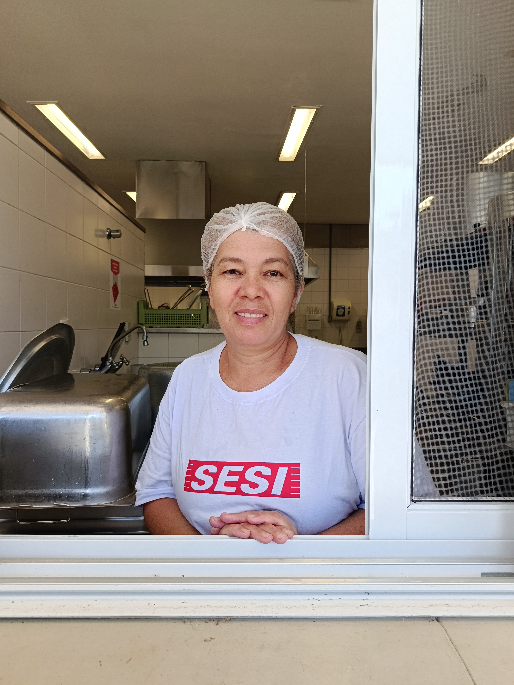
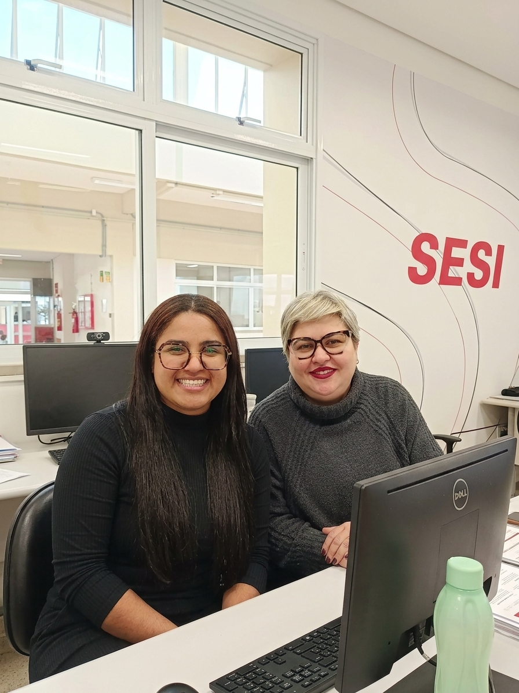
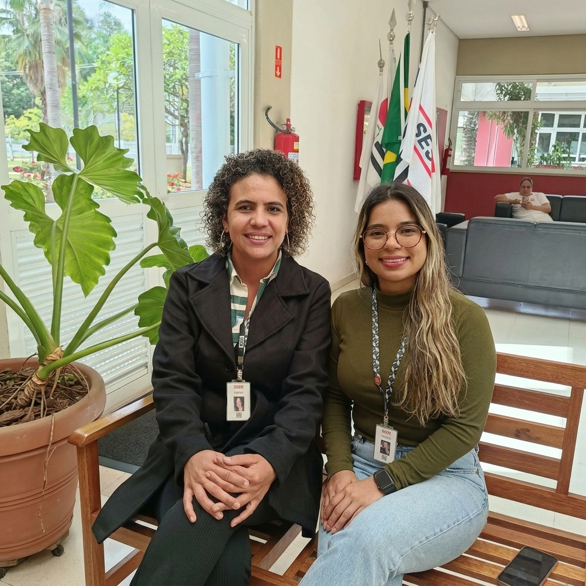
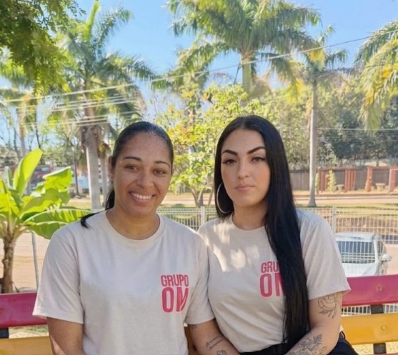
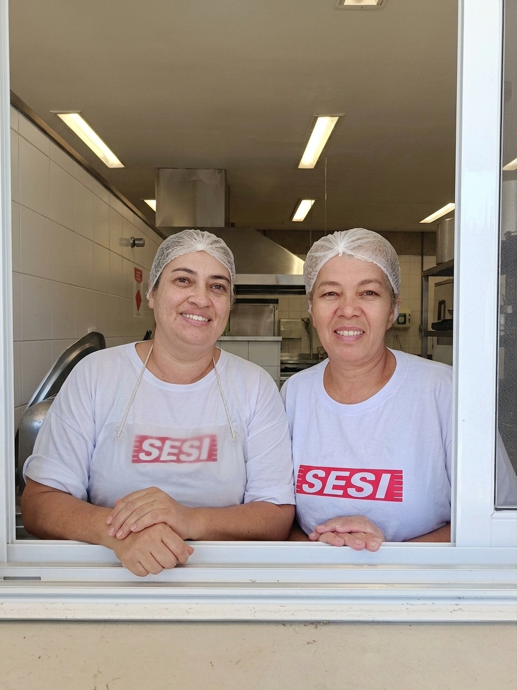
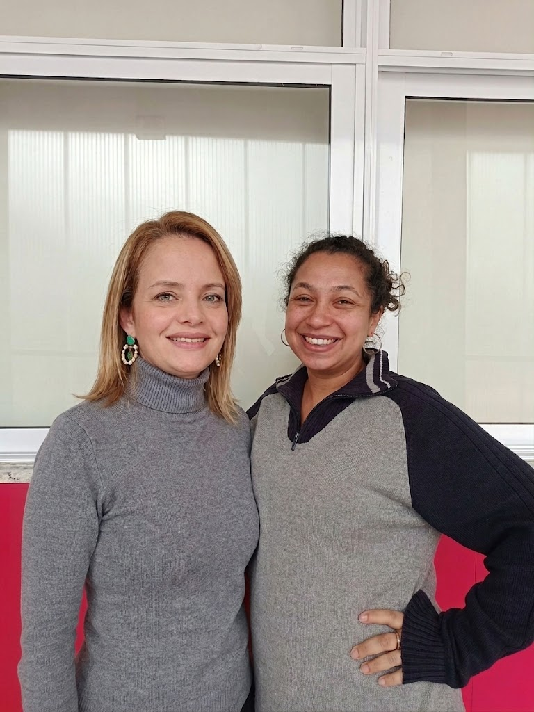
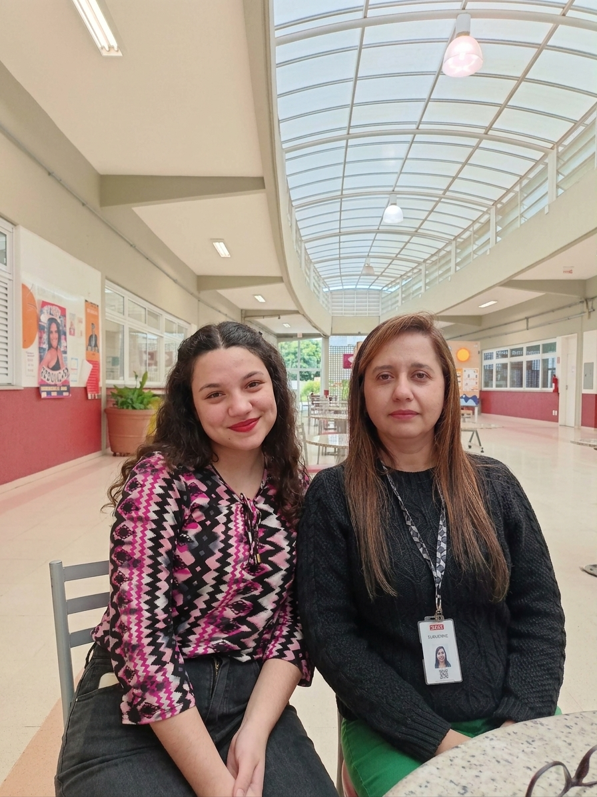
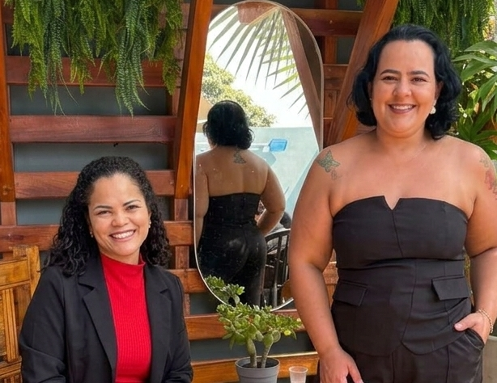

MULHERES QUE TRANSFORMAM A EDUCAÇÃO
Desenvolvido pelos alunos do curso técnico de Desenvolvimento de Sistemas do Sesi Vinhedo, o projeto visa resgatar, ouvir e valorizar as histórias de vida e trajetórias das mulheres que trabalham na instituição (professoras, inspetoras, gestoras, equipes de limpeza, alimentação, biblioteca e apoio). Indo além das funções que elas desempenham no dia a dia escolar, a iniciativa busca reconhecer o papel fundamental e a importância dessas profissionais na construção da comunidade escolar e na formação dos estudantes.
Nossa Causa- Destaque - Uma história que inspiraEntre tantas mulheres, cada trajetória possui sua própria importância. Algumas histórias, porém, podem ganhar um espaço especial para apresentar com mais profundidade os caminhos percorridos, os desafios enfrentados e as conquistas alcançadas. Nesta seção destacamos uma das participantes do projeto, dando espaço para conhecer sua história e suas experiências. Mais do que destacar uma pessoa, esta seção apresenta todas as mulheres que, diariamente, contribuem para construir a história da nossa comunidade escolar.

Inspetoras - Quem está presente na nossa rotina

Durante a rotina escolar, as inspetoras estão presentes em diferentes momentos do nosso dia. Elas acompanham os estudantes, orientam, auxiliam na organização dos espaços e ajudam a manter um ambiente de convivência, cuidado e respeito. Mais do que acompanhar a rotina, elas também fazem parte das experiências que construímos dentro da escola. São profissionais que conhecem os alunos, estão presentes nos momentos de movimento e contribuem para que o dia a dia aconteça de forma mais organizada e acolhedora.
Gestão - Liderança que transforma

Por trás de uma instituição organizada existem pessoas que planejam, orientam, tomam decisões e trabalham para que diferentes áreas possam funcionar em conjunto. As mulheres da gestão exercem um papel importante nesse processo. Por meio de sua liderança, organização e dedicação, contribuem para o desenvolvimento da instituição e para a construção de um ambiente cada vez mais apto para acolher e ensinar. Nesta seção, conhecemos algumas dessas mulheres, suas trajetórias e as experiências que marcaram sua caminhada profissional.
Secretaria - Organização que mantém tudo em movimento

Muitas das informações e processos que fazem parte da rotina escolar passam pela secretaria. É nesse espaço que a organização, responsabilidade, comunicação e atenção aos detalhes se encontram. As profissionais desse setor estão presentes em diversos momentos da vida escolar, auxiliando com documentos, registros, atendimento e apoio aos alunos, famílias e equipe.
Limpeza - Cuidar dos espaços também é cuidar das pessoas

Um espaço limpo, organizado e agradável faz parte do dia a dia de uma boa escola. Todos os dias, profissionais da limpeza trabalham para que diferentes espaços do SESI estejam preparados para acolher estudantes, professores, colaboradores e visitantes. Seu trabalho está presente nos detalhes que muitas vezes passam despercebidos, mas que fazem diferença no bem-estar e na rotina de toda a comunidade escolar. Nesta seção, reconhecemos as mulheres que dedicam seu trabalho ao cuidado e à conservação dos espaços da instituição.
Alimentação - Alimentar também é uma forma de cuidar

A alimentação faz parte da rotina e do bem-estar dos estudantes. Todos os dias, profissionais desse setor trabalham para preparar, organizar e oferecer os alimentos que fazem parte da comunidade escolar. Por trás de cada refeição existe dedicação, responsabilidade e cuidado. Nesta seção, conhecemos as mulheres que fazem parte deste trabalho e descobrimos um pouco de suas histórias, experiências e contribuições para o SESI.
Biblioteca - Entre livros, descobertas e histórias

A biblioteca é um espaço onde conhecimento, imaginação e aprendizagem se unem. Entre livros, pesquisas e descobertas, a profissional que atua nesse ambiente ajuda os alunos a se aproximarem do conhecimento de diferentes maneiras. Seu trabalho contribui para transformar a biblioteca em um lugar de descoberta, incentivo à leitura e construção de novos aprendizados. Aqui, conhecemos a mulher que faz parte dessa história e que contribui a tornar o conhecimento ainda mais próximo dos estudantes.
Apoio pedagógico - Apoiar também é transformar

A trajetória escolar é formada por diferentes desafios, descobertas e conquistas. Nesse processo, o apoio de profissionais que acompanham, orientam e auxiliam os estudantes possui grande importância. As mulheres que atuam no apoio pedagógico contribuem para que os alunos encontrem orientação e suporte durante sua formação. Nesta seção, conhecemos suas trajetórias e entendemos um pouco mais sobre sua importância para a comunidade escolar.
Professoras - Mulheres que ensinam e inspiram

Ensinar vai muito além de transmitir conhecimentos. É acompanhar descobertas, incentivar sonhos, enfrentar desafios e participar de diferentes momentos da formação acadêmica. As professoras fazem parte da rotina escolar e passam seus conhecimentos para além das salas de aula. Nesta seção, apresentamos algumas dessas mulheres, suas histórias e experiências em sua trajetória na educação.
Mães - O apoio que começa em casa

A educação não acontece somente dentro das salas de aula. A caminhada de cada estudante é mediada por mulheres que estão presentes em casa, incentivando, orientando, aconselhando e apoiando suas conquistas. Mães, responsáveis e outras mulheres que participam da formação dos estudantes fazem parte dessa história. Nesta seção, conhecemos algumas dessas mulheres e suas experiências, mostrando como o cuidado e o acompanhamento familiar também faz parte da construção da trajetória escolar.